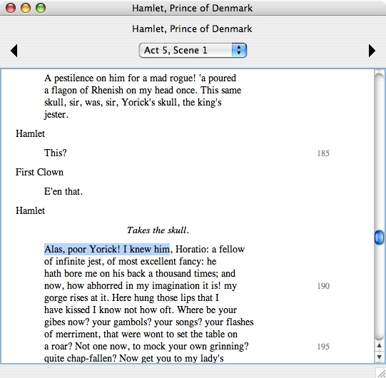
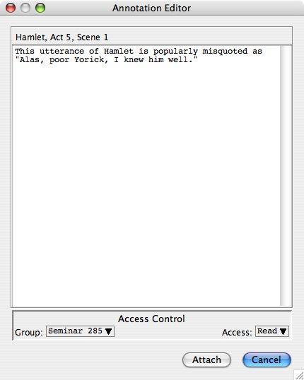
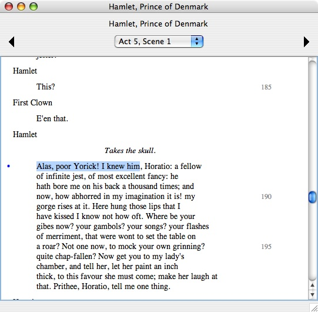
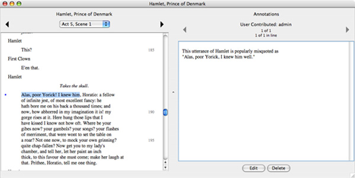

|
|
|
WordHoard allows you to add plain text annotations to selected passages in a work. The annotation author indicates which groups may see the annotation.
To create an annotation you must first login to WordHoard. Open the text of the work you wish to annotate. As an example, consider the text of Act 5, Scene 1 of Shakespeare's Hamlet.

Highlight the text you wish to annotate. Here we select Hamlet's famous saying "Alas, poor Yorick, I knew him, Horatio." Select "Annotate" from the "File" menu to display the annotation text entry dialog. Type your annotation text into the entry field. Set access permissions for groups you wish to see your annotation. Press the "Attach" button to create the annotation or "Cancel" to abort the annotation process.

Once you add the annotation, a blue bullet appears in the left margin of the line containing the text you annotated. This is the same display mechanism used for Homer scholia in The Iliad.

To see the annotations for a line, click the blue bullet next to the line. The window expands on the right to display the annotations. If the window is too close to the right edge of the screen, it is moved left to make room.

Click on the left and right arrows to move forwards and backwards through the list of annotations if more than one is available. As you move through the annotations, the text to which each annotation is attached is highlighted in the text panel on the left. Annotations for a line in the The Iliad follow any scholia for that line.
If you are the author of the annotation currently being displayed, the "Edit" and "Delete" buttons are enabled. Press "Edit" to edit the text of the annotation. Press "Delete" to delete the annotation.
Accounts with account management privileges can view, edit or delete any annotation.
When you are done working with the annotations, select the "Hide Annotation Panel" command from the "Views" menu to hide the annotation panel, shrink the work display window back to its original size, and restore its original position on the screen. The name of the command changes to "Show Annotation Panel." If you select it again, the annotation panel is shown. The shortcut Command-K is a convenient way to toggle the display of the annotation panel.
To show and hide the blue bullet annotation markers, select "Show/Hide Annotation Markers" from the "Views" menu. You may also type Command-J. Annotation markers are shown by default. If you don't want to see the annotations, you can hide the markers to make the text load faster.
|
|
|